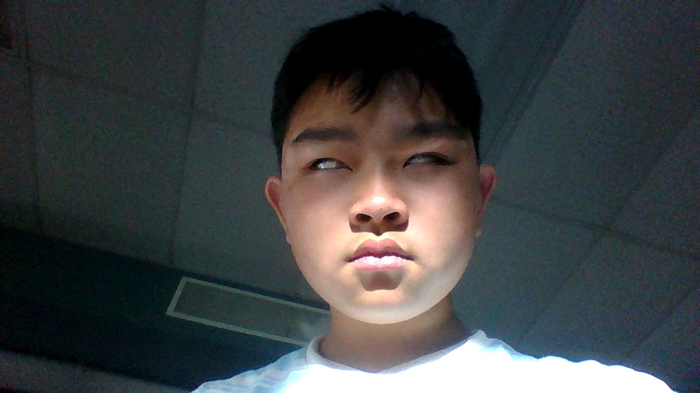

Taketo Chen's Resume

Skills
- HTML
- CSS
- Scratch
- Command Prompt
Education & Credentials
-
Glen A. Wilson High School -- Hacienda Heights, CA
High School Diploma, 2017-2021
-
California Institute of Technology -- Pasadena, CA
Masters Degree in Programming, 2022-2028
-
University of Phoenix Online Programming Class -- Phoenix, AZ
Bachelors Degree in Programming, 2029-2033